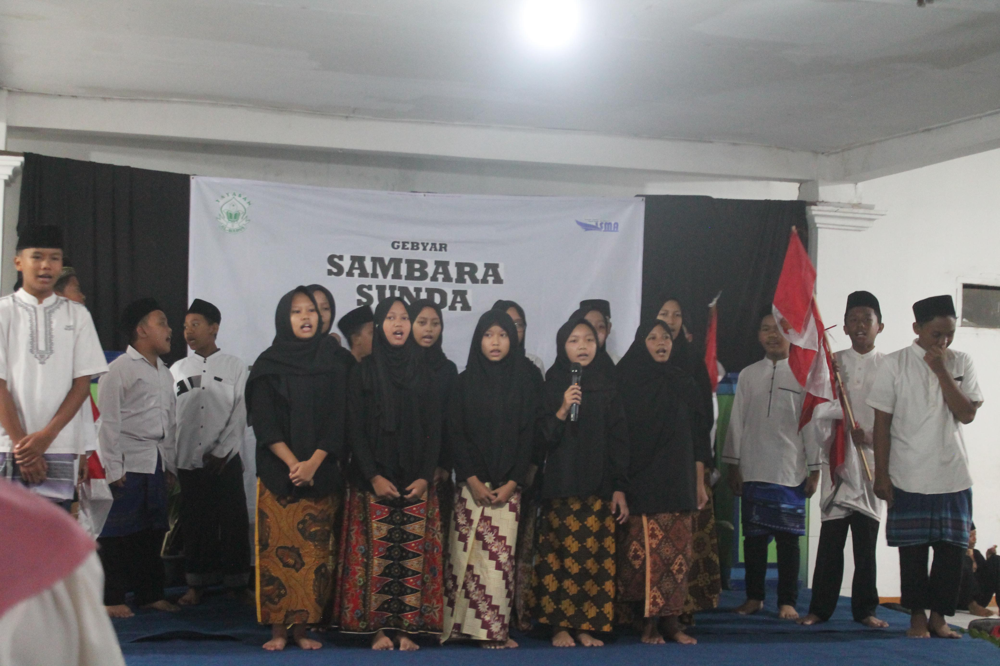

hari Santri x Sambara Sunda
Hari Santri Nasional (HSN) dipiéling saban tanggal
22 Oktober sarta sacara resmi ditetepkeun ku pamaréntah
ngaliwatan Kaputusan Présidén RI Nomor 22 Taun 2015.
Tanggal ieu dipilih lain tanpa alesan, tapi pikeun ngélingan hiji
kajadian penting pisan dina sajarah kamerdékaan, nyaéta:
Inti Sajarah: Resolusi Jihad (22 Oktober 1945)
-
Titik Mimitina : Resolusi jihad (22 Oktober 1945)
-
Kasang Tukang (latar Belakang) : Sanggeus Indonésia
Merdéka (17 Agustus 1945), Walanda jeung Sakutu daratang deui ka
Surabaya pikeun ngarebut kakawasaan.
-
Peranan Ulama : Ningali ancaman ieu,
Hadratus Syékh KH Hasyim Asy'ari (tokoh ulama sarta pangadeg
Nahdlatul Ulama) ngaluarkeun fatwa anu disebut
"Resolusi Jihad Fii Sabilillah" dina tanggal
22 Oktober 1945.
-
Seruan : Eusi Resolusi Jihad nyaéta seruan ka
sakumna umat Islam, utamana para santri, yén
berjuang mertahankeun kamerdékaan Indonésia téh mangrupa
kawajiban agama (fardhu 'ain).
-
Dampak : Fatwa ieu ngahurungkeun sumanget jihad di
kalangan santri jeung rahayat Jawa Wétan, nu jadi dasar sumanget
peperangan 10 Nopémber 1945 di Surabaya anu kacida héroikna.
-
Tujuan HSN :
Ditetepkeunana Poé Santri téh mangrupa bentuk panghargaan nagara
pikeun ngélingan jasa badag para santri jeung ulama nu geus berjuang
jiwa raga dina merébut jeung mertahankeun kamerdékaan Indonésia.
-
Ditetepkeun Sacara Resmi
-
Tujuan : Pikeun ngahormat, ngéling-ngéling, sarta
ngaku kana peran badag para ulama jeung santri dina merjuangkeun
jeung mertahankeun kamerdékaan Indonésia.
-
Prosés : Saenggeus ngaliwatan sababaraha usulan,
Présidén Joko Widodo sacara resmi netepkeun 22 Oktober minangka Poé
Santri Nasional dina 15 Oktober 2015.
Ku kituna, Poé Santri janten simbul pangakuan nagara kana kontribusi
sajarah kaum santri dina ngajaga nagara, boh sacara fisik dina jaman
perang, boh sacara inteléktual jeung moral dina jaman pangwangunan.
Dina basa Sunda, kecap "sambara (sakapeung ditulis 'bungbu' atawa
'bungbuahan') hartina téh bungbu atawa bumbu-bumbu.
Contona: bungbu dapur saperti jahé, konéng, laja, jeung sajabana.
Nanging, dina konteks "acara" (saperti pasanggiri, pintonan,
atawa féstival), Sambara Sunda boga harti anu leuwih lega tur
simbolis, sanajan aya ogé anu ngagunakeunana salaku ngaran tempat makan
(Restoran Sambara).

Dina acara kasundaan,
"Sambara Sunda"
umumna dimaksudkeun:
-
Pasanggiri (Kompetisi) : Nunjukkeun yén éta acara mangrupa
ajang pikeun ngasakeun atawa nguji kamampuhan dina widang seni
jeung budaya Sunda.
Conto : Pasanggiri ngadongéng,
maca sajak Sunda, atawa nembang.
-
Pintonan/Féstival : Éta acara téh tempat pikeun ngumpulkeun
jeung mamerkeun sagala rupa kabeungharan budaya Sunda.
Analogi
: Saperti bungbu (sambara) anu ngalengkepan rasa dahareun, acara
éta ngalengkepan jeung nambahkeun "rasa" tina budaya Sunda.
-
Naratas : Aya ogé maksud pikeun ngaraketkeun tali
silaturahmi sarta ngahudang sumanget urang Sunda dina ngamumulé
budayana.
Singgetna : Sambara Sunda dina acara mah bisa dihartikeun salaku
'Wadah Pamanggihan' atawa 'Wadah Pamintonan' seni jeung budaya Sunda
pikeun ngamumulé tur ngaronjatkeun ajén inajén kasundaan.
Madrasah Al-Harus baris ngayakeun acara husus miéling Hari Santri
Nasional, dibarengan ku pintonan seni ti Sambara Sunda nyaéta
kaulinan barudak, kawih, jeung sisindiran. Dina raraga miéling
Hari Santri, Madrasah Al-Harus kalayan reueus ngagelar acara anu
diangkat dina kolaborasi husus
"Hari Santri Nasional X Sambara Sunda" anu ditemaan
"NYA NYANTRI NYA NYUNDA". Ieu mangrupikeun wujud
komitmen Madrasah Al-Harus dina nyiptakeun santri anu mandiri dina elmu
agama, sarta panceg dina ngamumulé jati diri bangsa ngaliwatan kasenian
Sunda.
Tujuan Utama :
-
Ngaronjatkeun Sumanget Jihad Intelektual: Ngahudangkeun deui sumanget
para santri pikeun bajoang dina widang elmu pangaweruh.
-
Ngamumulé Budaya: Ngajantenkeun kasenian Sunda minangka wasilah
(perantara) dakwah anu éndah tur matak kataji.
-
Ngawangun Kapasitas Santri: Méré pangalaman dina ngokolakeun kagiatan
ageung sareng ngamekarkeun bakat seni.
Kaulinan Barudak
-
Rerebonan (Bentengan)
Ngaran "Rerebonan (Bénténgan)" sorangan jelas Nunjukkeun yén kaulinan
ieu diilhami tina konsep peperangan jeung pertahanan bénténg. Mimitina
mah,. kaulinan ieu biasana dimaénkeun dilapang atawa buruan lega
sabada barudak réngsé sakola atawa nalika soré. Kaulinan ieu teu butuh
alat anu mahal, ngan butuh "rebon/bénténg", bisa ku tihang, sendal,
tangkal, batu. Ieu ogé nunjukeun ciri khas kaulinan tradisional.
-
Pamaén : Dilakukeun ku dua kelompok, saban
kelompokna biasana ay 4 nepi 8 urang.
-
Alat utama : Saban kelompok kudu nangtukeun hiji
tempat minangka "bénténg" atawa markas. Bénténg ieu biasana tihang,
tangkal, atawa pilar. Wewengkon sabudeureun bénténg disebut daerah
aman (basecamp).
-
Tujuan : Nyerang jeung nyabak bénténg atawa markas
musuh, sarta néwak anggota lawan.
Cara Maén :
-
Pamaén anu pangahirna nyabak bénténgna dianggap "kolot".
Pamaén "kolot" boga hak ngudag jeung néwak pamaén lawan anu
"leuwih ngora"
(anu leuwih lila teu nyabak bénténgna).
-
Pamaén anu kakuenaan ku lawan anu "leuwih kolot" dianggep
katawan sarta kudu ditunda di deukeut bénténg lawan minangka
tawanan.
-
Tawanan bisa dibebaskeun ku babaturanana sakelomppok ku cara
disabak.
-
Kelompok anu meunang nyaéta kelompok anu hasil nyabak bénténg lawan
bari gogorowokan "bénténg! (atawa kadang
Rebon! disababaraha daerah).
- Pérépét Jéngkol
kaulinan ieu sanés ngan ukur aya di Jawa Barat. di Jawa Tengah,
kaulinan anu sami pisan disebut "Dhingklik Oglak Aglik". Béda
ngaran sareng lirik lagu, tapi prinsip sareng gerakanana sarua : nguji
kasaimbangan sareng kakompakan.
Pérépét Jéngkol mangrupikeun kaulinan anu ngajarkeun
kasaimbangan, kakompakan, sareng konséntrasi, dibarengan ku
lagu anu pikaresepeun. Sanajan teu aya catetan resmi, tradisi ieu
nguatkeun yén budak baheula ngagunakeun hal-hal anu aya di alam pikeun
ngareka kaulinan anu pinuh ku nilai-nilai positip.
-
Tafsiran Gerakan : Gerakan suku pamaén anu silih
kaitkeun sarta silih anyam téh katingalina sapertos
tumpukan atawa rentengan buah jéngkol anu rék dikumbah
atawa dikulub, éta suku anu silih gantar (silih kait) téh anu
jadi inti tina kasaimbangan.
-
Tafsiran Suku Sunda : Aya ogé anu nyebatkeun yén
dina Basa Sunda, kecap "jéngkol" didieu ngandung harti
"Ngagantung" atawa "bergelantungan", nujul kana
gerakan pamaén anu ngagantungkeun beurat awak dina kaayaan hiji suku
diangkat bari pakait jeung nu séjén.
Kakawihan (Lagu Rahayat)
Kaulinan pérépét jéngkol teu tiasa dipisahkeun dina
kakawihan (lagu rahayat) anu marenganana.
Pérépét jéngkol
Jajahéan
kadémpét kohkol
jéjérétéan
"Pérépét" téh disangka mangrupikeun sora anu
disada nalika kulit jéngkol dibuka sacara paksa.
"Kadémpét kohkol" hartosna kajejérédéd ku
kohkol (kentongan), bari anu ngagambarkeun kumaha pamaén anu teu
saimbang atawa teu kompak bakal ragrag ngageblag.
-
Hayam-Hayaman
Ngaran "Hahayaman" (tina kecap hayam anu hartos na
ayam) nunjukkeun yén kaulinan ieu lahir tina
observasi kana kahirupan sapopoé di patukangan atawa
lembur. Didesa, hayam mangrupikeun ingon-ingon anu penting,
sarta careuh (musang) atanapi sato séjén anu sok ngaganggu
jeung ngudag hayam téh mangruppikeun ancéman anu nyata. Kaulinan ieu
ngamodélkeun kajadian di alam, dimana aya sato anu jadi buruan (hayam)
sareng aya anu jadi pamangsa (careuh).
Mimitina, kaulinan Hayam-Hayaman dijadikeun hiburan barudak anu ogé
ngandung unsur olahraga, ngalatih :
-
Katangkasan Fisik : Lumpat, nyingcet, jeung ngajaga
kasaimbangan.
-
Jiwa Sosial : Gawé bareng pikeun ngajaga hayam.
-
Strategi : Careuh kudu pinter néangan celah.
Hayam-hayaman sumebar utamana di wewengkon Jawa Barat, sarta di
sababaraha tempat sok disebut ogé kokotokan (dina dialék
Banten, tina kecap kotok = Hayam). Ieu némbongkeun kumaha
tradisi ieu poageuh dina budaya sunda.
Cara Maén
-
Jumlah Pamaén : Sahenteuna 10 urang, leuwih loba
leuwih ramé.
-
Tempat : Buruan atawa lapang anu leuga.
-
Nangtukeun Peran : Aya 3 peran utama :
1 Pamaén : Jadi Hayam (Anu diudag, anu kudu
disalametkeun).
1 Pamaén : Jadi Careuh (Musang Anu ngudag , kudu
néwak hayam).
Sésana : Jadi kandang (Anu ngabentuk
bundeuran jang ngahalangan caruh).
Aturan Maén
-
Ngawangun Kandang : Pamaén anu jadi kandang
ngabentuk bunderan (lingkaran) bari silih tangkepan leungeun pageuh.
-
Posisi Awal :
Hayam aya di jero bunderan.
Careuhaya diluar bunderan.
-
Mitembayan : Maén dimimitian ku Careuh anu mimiti
ngudag Hayam.
-
Tugas Pageur : Pamaén anu jadi kandang kudu usaha
ngahalangan Caruh sangkan teu bisa asup ngadeukeutan Hayam. Lamun
Careuh rék asup, pamaén pageur kudu nahan ku cara nguatkeun
tangkepan leungeun.
-
Tugas Hayam : Hayam kudu lincah lumpat di jero
bunderan bari nyingcet tina udagan Careuh.
-
Tugas Caruh : Careuh kudu pinter néangan celah..
Careuh bisa nyoba nembus diantara pamaén Pageur atawa nungguan Hayam
kaluar ti bunderan.
Réngsé Kaulinan (Meunang/éléh)
-
Careuh Meunang : Lamun
Careuh hasil néwak (nyabak) Hayam
-
Kandang Meunang : Lamun
Caruh Nyerah lantaran geus capé teu nisa
néwak Hayam.